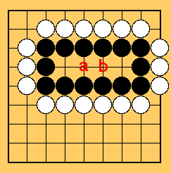

Agora, as pretas estão completamente cercadas. Qual é a jogada a ser feita?
Embora as pretas tenham 3 espaços no meio, eles são apenas um olho.
Portanto, você deve fazer dois olhos faznedo uma partição lá.
Se você não fizer, as brancas irão jogar onde as pretas deveriam ter jogado.
Um provérbio de Go -Seu ponto vital também é o do oponente.
Para a figura abaixo, onde você deve fazer uma partição?
Como você pode ver, se seu território é muito pequeno, você terá uma vida difícil.
Sempre tente fazer seu território grande o suficiente e não se deixe ser cercado.
E o caso abaixo?
Nesse caso, você não necessita fazer uma partição.
Se as brancas fizerem um movimento em a, responda a ele com um movimento em b.
Se as brancas jogarem em b, jogue em a.
Portanto, você pode sempre fazer dois olhos mesmo que as brancas tentem atacar.
Entretanto, se você ignorar o ataque das brancas, elas jogarão em a e b.
Neste caso, você terá apenas um olho, e certamente estará morto.
 Próximo
Próximo
 Conteúdo
Conteúdo